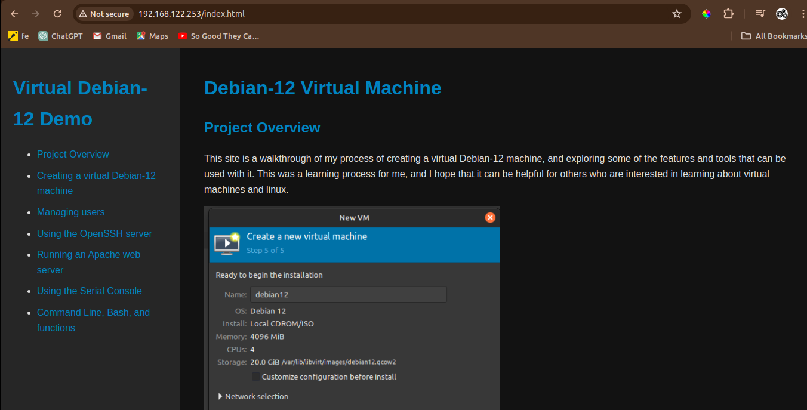

To host a website on my Debian-12 virtual machine, I decided to use the Apache web server. I'd already used Apache to host a website on a VPS I rent, so I thought it would be a good idea to try hosting a website on my VM.
I had selected the "web server" package during the installation of Debian-12, so I was pretty sure Apache was already installed. To confirm this, I ran the following command:
systemctl status apache2
Turns out, Apache was already installed and running. Just to confirm, I opened chrome on my host machine and navigated to the IP address of the VM (which I had previously found during the OpenSSH setup). I was greeted with the default Apache webpage, so I knew that Apache was working.
Next, I wanted to change the default webpage that Apache was serving. To give my ssh server a use and to allow me to copy and paste commands from my host machine, I used ssh to log into the VM. I then navigated to the /var/www/html directory, where the default webpage was stored:
cd /var/www/html
Since I wanted to have a webpage a bit more interesting than "hello world", I decided to clone the repository for the webpage you're currently reading. I did this with the following command (after installing git):
sudo apt install git
sudo git clone https://github.com/BSchoolland/virtual-deb-12-demo.git
After cloning the repository, I copied the contents of the "website" folder to the /var/www/html directory. I'd cloned the repo into the html directory, so I just had to move the contents of the website folder up one level (ensuring I had deleted the old index.html file first) I did this with the help of wildcards:
sudo rm index.html
sudo mv /virtual-deb-12-demo/* .
sudo rm -r virtual-deb-12-demo
After this, I was able to refresh the webpage in my browser and see the updated webpage. It was odd to see this webpage, which talks about the process of creating the VM, being hosted on the VM itself.
By the end of this process, I was able to host a webpage pulled from github on my Debian-12 VM using the Apache web server. It was actually quite simple!
